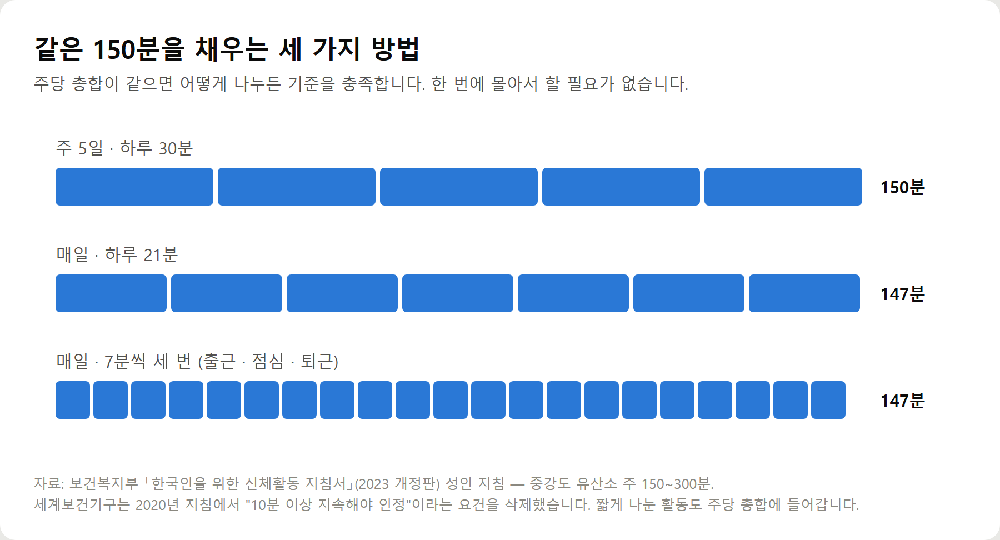
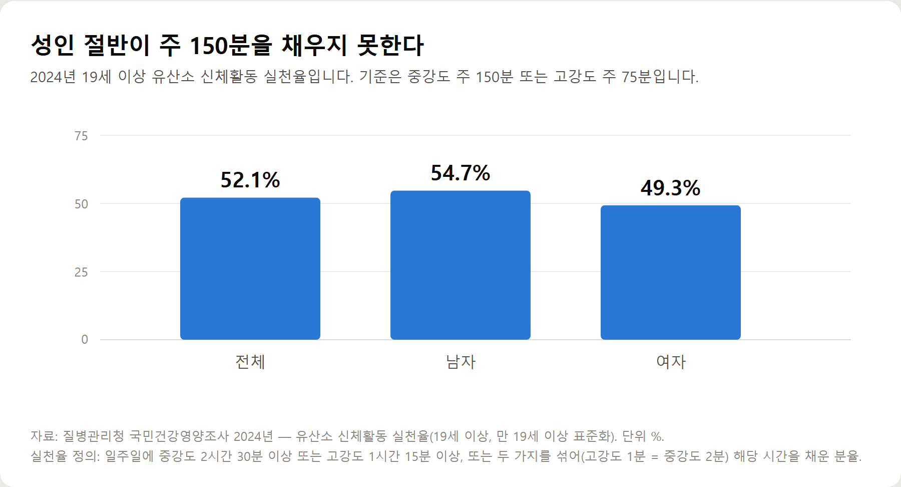
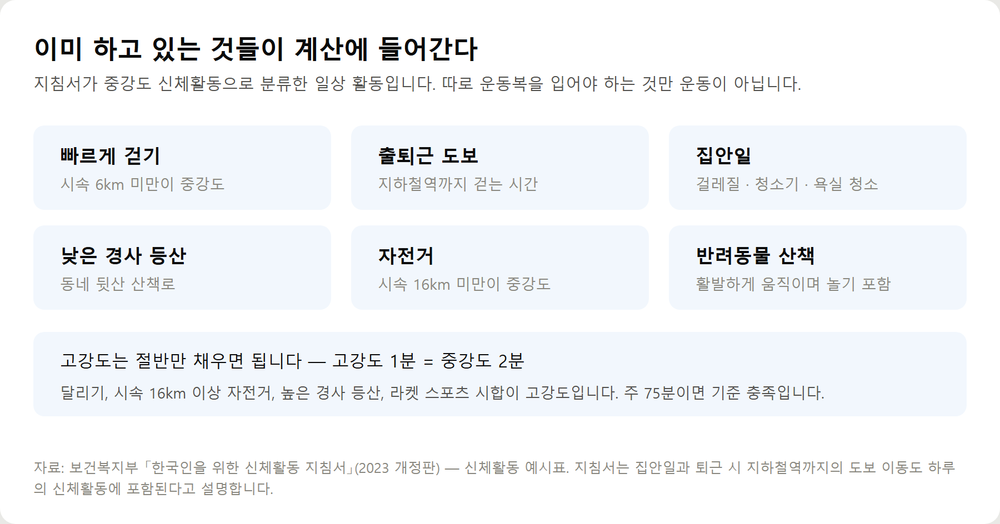

<meta charset="utf-8">
<title>걷기 주 150분 — 기준과 나누는 방법 — 나의 투자 그리고 행복한 여행</title>
<meta name="description" content="걷기 주 150분을 현실적으로 채우는 방법. 빠르게 걷기 속도 기준과 일상에서 쌓이는 시간, 나눠 걸어도 되는 근거를 공식 지침으로 정리했습니다.">
<meta name="viewport" content="width=device-width, initial-scale=1">
<link rel="canonical" href="https://worldtraveler1.tistory.com/104">
<link rel="preconnect" href="https://fonts.googleapis.com">
<link rel="preconnect" href="https://fonts.gstatic.com" crossorigin>
<link rel="stylesheet" href="https://fonts.googleapis.com/css2?family=Hahmlet:wght@400;600;800&family=IBM+Plex+Mono:wght@400;500&family=IBM+Plex+Sans+KR:wght@300;400;500;600&display=swap">

<style>
  :root{
    --paper:#F2EEE6;--surface:#FAF8F3;--surface-2:#E7E1D5;
    --ink:#191510;--ink-2:#4A4235;--ink-3:#7D7364;
    --line:#D6CEBF;--line-soft:#E4DDD0;--accent:#B06A15;--accent-bright:#C2761A;
    --up:#E5484D;--down:#3B82F6;
    --f-display:"Hahmlet",'Nanum Myeongjo',"Apple SD Gothic Neo",serif;
    --f-body:"IBM Plex Sans KR","Apple SD Gothic Neo","Malgun Gothic",sans-serif;
    --f-mono:"IBM Plex Mono","SFMono-Regular",Consolas,monospace;
    --pad:clamp(20px,5vw,64px);
  }
  @media (prefers-color-scheme:dark){
    :root:not([data-theme="light"]){
      --paper:#0B1120;--surface:#121A2C;--surface-2:#1A2439;
      --ink:#E9EEF7;--ink-2:#A9B5C9;--ink-3:#72809A;
      --line:#26314A;--line-soft:#1D2739;--accent:#E8A33D;--accent-bright:#F0B45C;
    }
  }
  *{box-sizing:border-box;}
  body{margin:0;background:var(--paper);color:var(--ink);font-family:var(--f-body);
    font-weight:300;font-size:1rem;line-height:1.75;-webkit-font-smoothing:antialiased;}
  a{color:inherit;}
  img{max-width:100%;height:auto;}
  .wrap{max-width:760px;margin:0 auto;padding-inline:var(--pad);}
  .nav{position:sticky;top:0;z-index:20;background:color-mix(in srgb,var(--paper) 88%,transparent);
    backdrop-filter:saturate(180%) blur(12px);border-bottom:1px solid var(--line);}
  .nav-in{display:flex;align-items:center;justify-content:space-between;height:58px;}
  .brand{font-family:var(--f-display);font-weight:600;font-size:1rem;letter-spacing:-.02em;text-decoration:none;}
  .back{font-family:var(--f-mono);font-size:.72rem;color:var(--ink-3);text-decoration:none;}
  .article{padding-block:clamp(40px,7vw,72px) clamp(56px,9vw,96px);}
  .eyebrow{font-family:var(--f-mono);font-size:.68rem;letter-spacing:.16em;text-transform:uppercase;
    color:var(--accent);margin:0 0 14px;}
  h1{font-family:var(--f-display);font-weight:800;font-size:clamp(1.6rem,4.4vw,2.3rem);
    line-height:1.3;letter-spacing:-.03em;margin:0 0 16px;}
  .byline{font-family:var(--f-mono);font-size:.72rem;color:var(--ink-3);
    padding-bottom:24px;border-bottom:1px solid var(--line);margin-bottom:32px;}
  h2{font-family:var(--f-display);font-weight:600;font-size:1.25rem;letter-spacing:-.02em;margin:42px 0 14px;}
  h3{font-family:var(--f-display);font-weight:600;font-size:1.05rem;letter-spacing:-.02em;
    margin:30px 0 10px;padding-top:14px;border-top:1px solid var(--line-soft);}
  h3 .code{font-family:var(--f-mono);font-size:.7rem;font-weight:400;color:var(--ink-3);margin-left:6px;}
  p{margin:0 0 18px;color:var(--ink-2);}
  ul.checks{margin:0 0 18px;padding-left:20px;color:var(--ink-2);}
  ul.checks li{margin-bottom:8px;font-size:.94rem;}
  table{width:100%;border-collapse:collapse;font-size:.88rem;margin-bottom:8px;}
  th{font-family:var(--f-mono);font-size:.66rem;letter-spacing:.06em;text-transform:uppercase;
    color:var(--ink-3);text-align:right;padding:8px 6px;border-bottom:1px solid var(--line);}
  th:first-child{text-align:left;}
  td{padding:10px 6px;border-bottom:1px solid var(--line-soft);color:var(--ink-2);}
  td.num{font-family:var(--f-mono);text-align:right;font-variant-numeric:tabular-nums;}
  td.up{color:var(--up);} td.down{color:var(--down);}
  .scroll{overflow-x:auto;}
  figure{margin:22px 0;}
  figure img{display:block;border-radius:3px;background:var(--surface-2);}
  figcaption{margin-top:8px;font-family:var(--f-mono);font-size:.68rem;color:var(--ink-3);text-align:center;}
  .note{margin-top:34px;padding:16px 18px;border-left:3px solid var(--accent);
    background:var(--surface);border-radius:0 3px 3px 0;}
  .note p{margin:0;font-size:.85rem;color:var(--ink-3);}
  .foot{border-top:1px solid var(--line);background:var(--surface);padding-block:30px 38px;}
  .foot p{margin:0;font-size:.8rem;color:var(--ink-3);}
</style>

<nav class="nav">
  <div class="wrap nav-in">
    <a class="brand" href="../index.html">나의 투자 그리고 행복한 여행</a>
    <a class="back" href="../index.html#stocks">← 시황으로</a>
  </div>
</nav>

<main class="wrap article">
  <p class="eyebrow">Market</p>
  <h1>걷기 주 150분 — 기준과 나누는 방법 요약</h1>
  <p class="byline">건강 · 2026-09-21 기준</p>

  <p><b>이 포스팅은 쿠팡 파트너스 활동의 일환으로, 이에 따른 일정액의 수수료를 제공받습니다.</b></p>
  <p>한 줄 요약: 주 150분은 하루 21분이고, WHO가 2020년에 '10분 이상 지속' 요건을 삭제해 짧게 나눠 걸어도 총합에 들어갑니다.</p>
  <p>2026년 9월 21일에 보건복지부 신체활동 지침서 2023 개정판과 국민건강영양조사 2024년 자료로 정리한 기록입니다.</p>
  <h2>숫자로 보는 걷기 기준</h2>
  <ul class="checks">
    <li>성인 권고 — 중강도 유산소 주 150~300분 또는 고강도 주 75~150분</li>
    <li>하루로 나누면 — 매일 21분, 주 5일이면 30분</li>
    <li>환산 — 고강도 1분 = 중강도 2분</li>
    <li>빠르게 걷기 — 시속 6km 미만이 중강도, 자전거는 시속 16km 미만</li>
    <li>강도 — MET 저강도 1.5~3.0 / 중강도 3.0~6.0 / 고강도 6.0 이상</li>
    <li>실천율 — 2024년 19세 이상 52.1%(남 54.7%·여 49.3%)</li>
    <li>감량 후 유지 — 주 200~300분</li>
  </ul>
  <figure><figcaption>주당 총합이 같으면 어떻게 나누든 기준을 충족한다</figcaption></figure>
  <figure><figcaption>2024년 유산소 신체활동 실천율</figcaption></figure>
  <figure><figcaption>지침서가 중강도로 분류한 일상 활동들</figcaption></figure>
  <p>세계보건기구는 2020년 지침에서 '10분 이상 지속해야 인정'이라는 요건을 삭제했습니다. 출근길 7분, 점심 뒤 8분, 퇴근길 6분이 모두 주당 총합에 들어갑니다. 한국 지침서의 실천사례 평가도 10분짜리 활동을 그대로 합산합니다.</p>
  <p>운동만 신체활동으로 세는 것도 아닙니다. 지침서는 집 청소·빨래 같은 집안일과 퇴근 시 지하철역까지의 도보 이동도 하루의 신체활동에 포함된다고 설명합니다.</p>
  <p>다만 걷기만으로는 부족한 구간이 있습니다. 체중을 빼는 중이라면 근력운동을 병행해야 근육 손실을 막을 수 있습니다.</p>
  <div style="text-align:center;margin:30px 0"><a href="https://link.coupang.com/a/hdKjkBjyDY" target="_blank" rel="nofollow sponsored noopener" style="display:inline-block;padding:15px 28px;background:#E34948;color:#fff;font-weight:700;font-size:18px;text-decoration:none;border-radius:8px"><b>▶ 쿠팡에서 보기 — 르까프 에어 365 워킹화</b></a></div>
  <p>강도 판단 기준, 출퇴근에서 시간을 세는 방법, 빈 곳을 메우는 네 가지, 질환별 주의사항, FAQ 8문항은 원문에 있습니다.</p>
  <h2>출처</h2>
  <ul class="checks">
    <li>보건복지부 「한국인을 위한 신체활동 지침서」 2023 개정판 — 성인·노인 지침, 신체활동 예시표와 강도표, 실천사례 평가, 만성질환자 주의사항</li>
    <li>세계보건기구(WHO) 2020 신체활동·좌식행동 지침 — 10분 이상 지속 요건 삭제</li>
    <li>질병관리청 국민건강영양조사 2024년 — 유산소 신체활동 실천율과 그 정의</li>
    <li>대한비만학회 「비만 진료지침 2022」 8판 요약본 — 운동치료 지침, 감량 후 유지 권고, 운동 전 의학적 상담 기준</li>
  </ul>
  <div class="note"><p>이 글은 건강정보를 제공하기 위한 일반적인 정보이며, 개인의 진단이나 치료를 대신하지 않습니다. 질환이 있거나 약을 복용 중이라면 운동을 시작하기 전에 담당 의료진과 상담하시기 바랍니다.</p></div>
  <p style="font-size:12px;color:#999;line-height:1.6;margin-top:36px">이 포스팅은 쿠팡 파트너스 활동의 일환으로, 이에 따른 일정액의 수수료를 제공받습니다.</p>
</main>

<footer class="foot">
  <div class="wrap"><p>나의 투자 그리고 행복한 여행 · 투자 판단의 참고 자료일 뿐, 매수·매도를 권유하지 않습니다.</p></div>
</footer>
